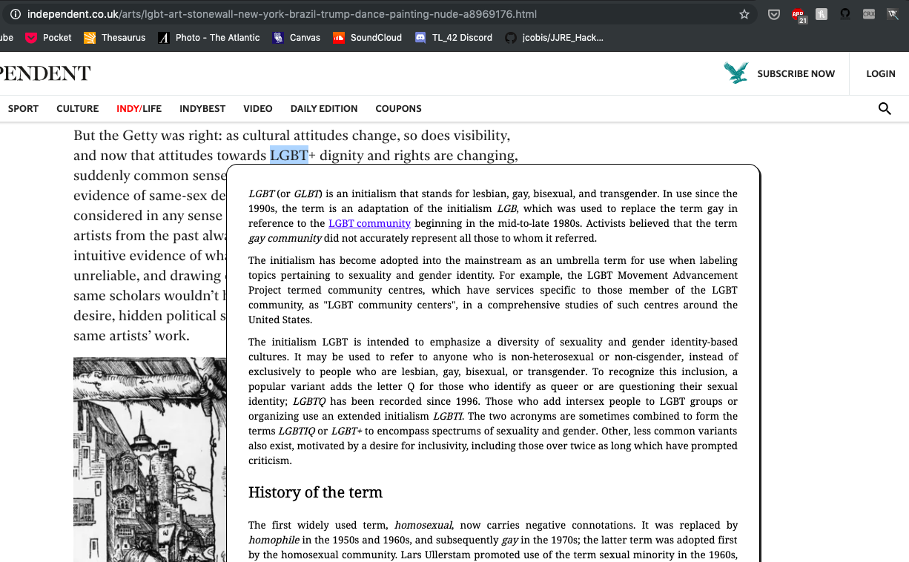
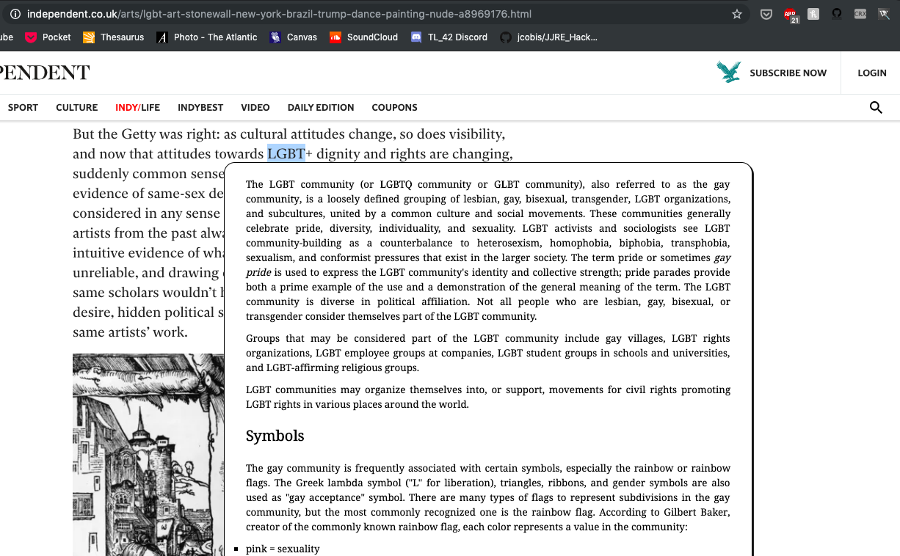

WikiLearn is a tool that increases the efficiency of your web browsing by encouraging learning.
How frequently do you open new tabs to search for something on Wikipedia? With WikiLearn, you can view the Wikipedia entry for any term without leaving the page you're on. Learn on!
Usage
Simply highlight a word or phrase on a webpage. If there's a Wikipedia entry for what you highlighted, WikiLearn will show it to you in a popup window. From there, you may click on other Wikipedia links within the mini-browser and continue learning, all while remaining on the tab of your original article!
To close the popup, simply click away from it.
Examples

WikiLearn quickly enhances understanding of articles and concepts. Links can be further explored (i.e. LGBT community).

Link browsing within the popup enables informative deep-dives.